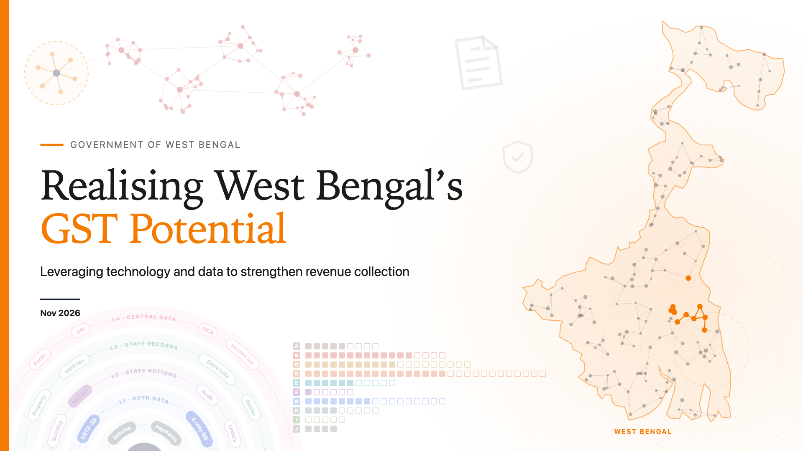

Government of West Bengal
Realising West Bengal’s GST Potential
Leveraging technology and data to strengthen revenue collection
Nov 2026
Report
Detailed Report
The full study with data, analysis and recommendations.
Read the report
Presentation
Presentation
16:9 slides on West Bengal’s GST potential and the capabilities needed to realise it. Use the arrow keys to move between slides; save as PDF or PPT from the slide view.
Open the presentation